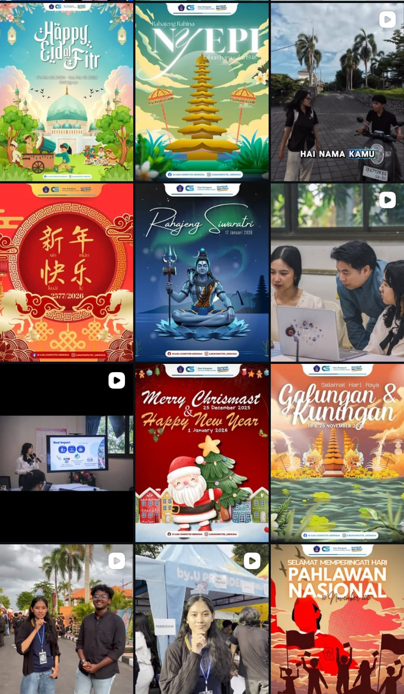
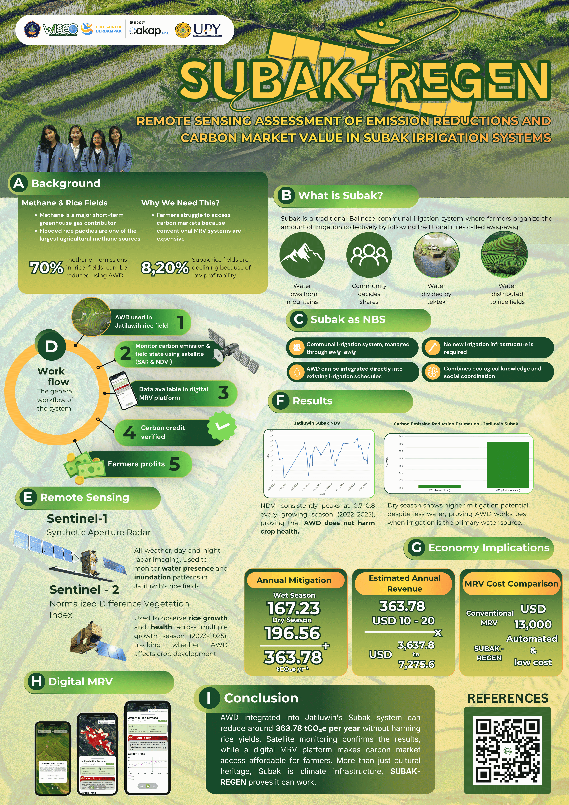
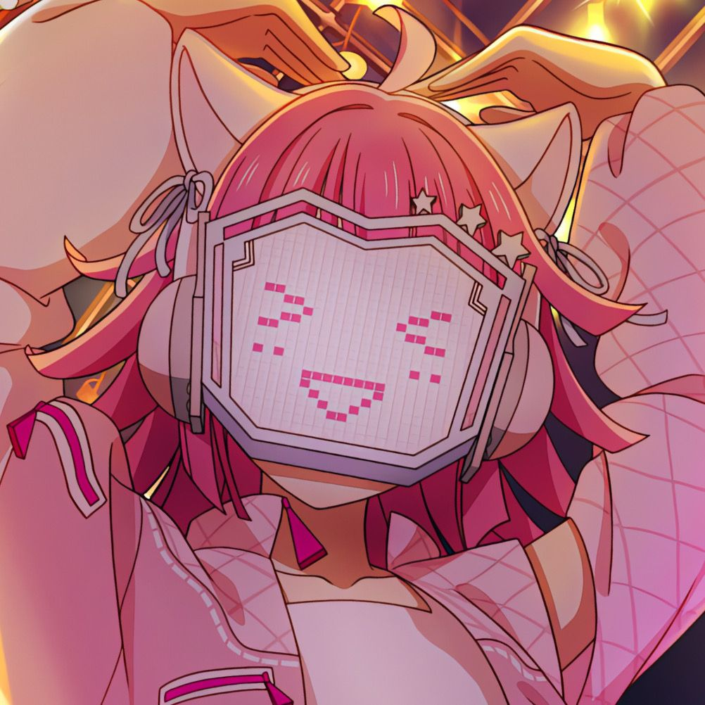

Kenia's Portofolio
.
Hello, i'm
Kenia
Welcome to my portofolio!
Biodata
Get to know me!

Social Media Designs
Compilations of my social media designs

Poster Designs
Recent poster designs

GitHub Profile
Let's be friends here!
Y2K website
See my Y2k inspired e-commerce